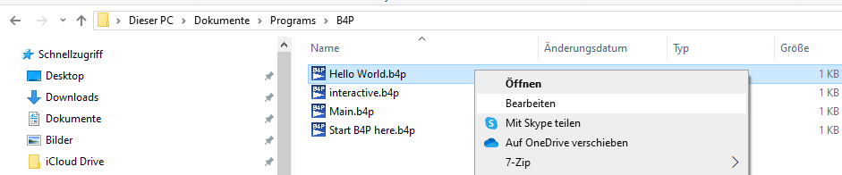
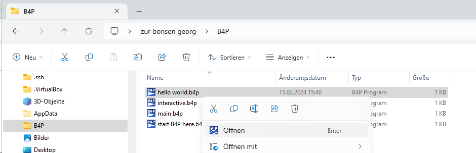
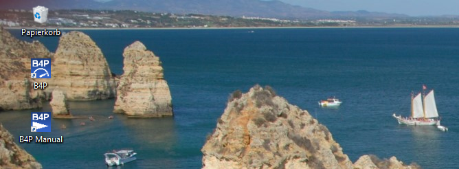

Introduction
As a general advice, restart your machine because various graphic icons will not show up immediately and
the paths needed to start B4P from command line will be effective after the restart only.
As a first step, go to C:\Users\Your user name\Documents\Programs\B4P.
Using the Microsoft file explorer, right-click on the file Hello World.b4p and choose Edit in the
pop-up menu. Depending on your country and language settings in Windows, it may be in a different language,
but typically it's the 2nd menu entry after Open:

The Microsoft editor will open and show the source code:
#!/usr/local/bin/b4p -x
// The statement in the 1st row applies to UNIX/Linux/MacOS only and is called a "Shebang".
// It specifies the language interpreter to use when started as an executable file.
// You can delete this line it if you plan to use B4P under Windows only.
echo(Hello World);
Close the editor. You have two choices to run this program:
- Double-click on the file "Hello World.b4p" using the left mouse button
- Click the file "Hello World.b4p" with the right mouse button and choose the 1st menu entry Open.

The program will start and you will see the following output:
In the very first run, B4P searches the 7-Zip utility and memorizes its whereabouts:
B4P - Beyond Former Performance
_______________________________________________________________________________
Version 8.00 Candidate (2020-11-12)
Copyright (C) 2012..2020 Georg zur Bonsen, all rights reserved.
*** No valid license found. For demos, education and evaluation only.
Some functional restrictions apply.
Look for the 7Z compression/decomopression utility
Found following program file paths: {'C:\Program Files','C:\Program Files (x86)'}
- 7z.exe Zip-utility found in {'C:\Program Files\7-Zip\7z.exe'} (OK)
Hello World
Done - Press ENTER keyOutcome if this is not the very first run:
B4P - Beyond Former Performance
_______________________________________________________________________________
Version 8.00 Candidate (2020-11-12)
Copyright (C) 2012..2020 Georg zur Bonsen, all rights reserved.
*** No valid license found. For demos, education and evaluation only.
Some functional restrictions apply.
Hello World
Done - Press ENTER keyCongratulations. B4P has successfully started. Press [Enter] to close the console window. This is the easiest way to run B4P program files.
Starting B4P from Start Menu
As a next step, you will learn how to start B4P directly without specifying a program file.
In this case, it will look for the
B4P program called "main.b4p" in the currently configured starting directory. After the
installation with the personal folder created, the directory C:\Users\Your user name\Documents\Programs\B4P
the memorized starting directory.
You can change the starting directory to a different location by making a copy of start B4P here.b4p
into a different directory and click on it to execute it. Don't do it for this first example yet.
In the starting directory, B4P will look for the file 'main.b4p'. If the file is available, then you
will be asked whether to start that one or enter interactive mode instead. Start the program.
In case no 'main.b4p' is available, then B4P enters into interactive mode directly.
Start B4P using the start menu:

Click on the yellow folder B4P, the folder opens up, and then on the blue icon B4P to start the run-time machine.
The following output will occur:
Wait 2 seconds and main.b4p starts, or hit any key to interrupt and enter interative mode
B4P - Beyond Former Performance
_______________________________________________________________________________
Version 8.00 Candidate (2020-11-12)
Copyright (C) 2012..2020 Georg zur Bonsen, all rights reserved.
*** No valid license found. For demos, education and evaluation only.
Some functional restrictions apply.
Starting 'Main.b4p' in two seconds... Press any key to interrupt. Done.
Main.b4p in C:\Users\Zur Bonsen Georg\Documents\Programs\B4P completed execution.
Feel free to add or change the code in this file.
Type 'help' for help, 'docs' or 'docs search' for online B4P documentation.
>> exit
exit (); called
Done - Press ENTER keyStarting B4P from the Windows Desk Top
The actual statement in this file is to output 'Test', similar as the 'Hello World.b4p' program is doing.
If you have also installed shortcuts on the desktop, click on the following symbol and you will get the same output.

As of now, you are ready to start.
Hint: To access the documentation, click on the icon "B4P Manual" on the desktop or in the start menu. For the first time,
you will be asked to select the favorite browser (must exist on your PC). Following this, the starting page will open up.
Internet connectivitiy is required for this.
Starting B4P from Command Line
Start cmd or alternatively powershell and type b4p or B4P.
After the command, you can provide additional command line arguments such as the B4P program file to start, further command line
parameters proiding additional information to the B4P program, and/or command options (switches) which begin with a minus sign.
The following example uses the switch -x which exits B4P immediatly without asking to press [Enter] when the B4P
program has finished running. You can try it on both Microsoft Powershell and the CMD console.
PS C:\Users\Your user name> cd "C:\Users\Your user name\Documents\Programs\B4P"
PS C:\Users\Your user name\Documents\Programs\B4P> ls *.b4p
Verzeichnis: C:\Users\Your user name\Documents\Programs\B4P
Mode LastWriteTime Length Name
---- ------------- ------ ----
-a---- 06.11.20 22:18 482 Hello World.b4p
-a---- 02.10.20 21:52 12 interactive.b4p
-a---- 15.08.20 23:52 11 Main.b4p
-a---- 06.11.20 22:34 555 Start B4P here.b4p
PS C:\Users\Your user name\Documents\Programs\B4P> b4p -x "Hello World.b4p"
BB4P - Beyond Former Performance
_______________________________________________________________________________
Version 8.00 Candidate (2020-11-12)
Copyright (C) 2012..2020 Georg zur Bonsen, all rights reserved.
*** No valid license found. For demos, education and evaluation only.
Some functional restrictions apply.
Hello World
PS C:\Users\Your user name\Documents\Programs\B4P>Accessing the Reference Manual
Congratulations. You have been able to get your first B4P programs running. You also find the file "B4P Reference Manual.b4p". You have three possibilites to access the on-line documentation:
- "./B4P Reference Manual.b4p" (Command fully spelled out)
- ./*Manual* (More convenient if you use wildcard symbols)
- Inside B4P running in interactive mode, you can type docs to access the documentation, too.
At the first time, you will be asked for the browser you wish (currently Edge, Explorer and Chrome are supported), following this the on-line documentation opens up.